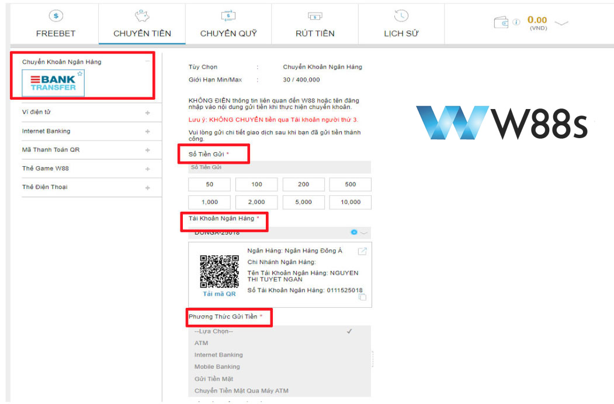
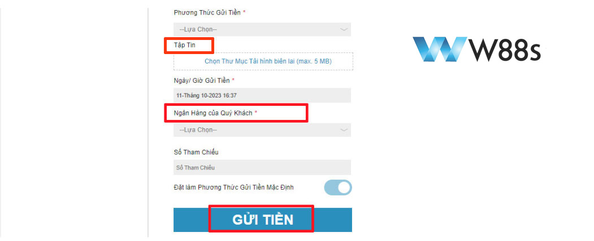
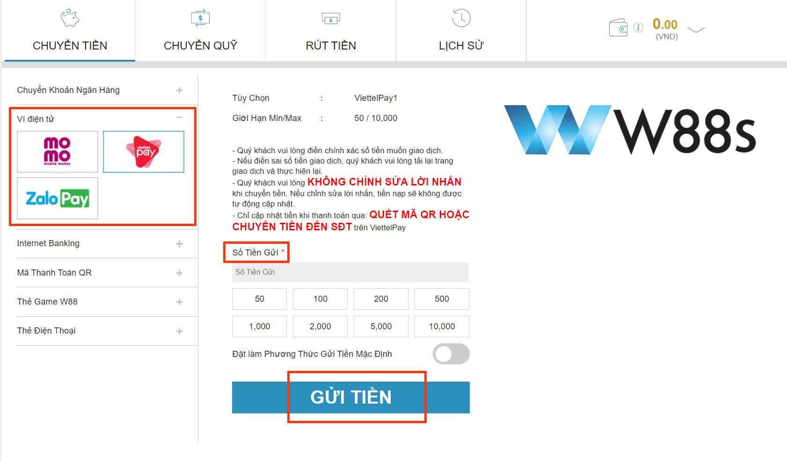
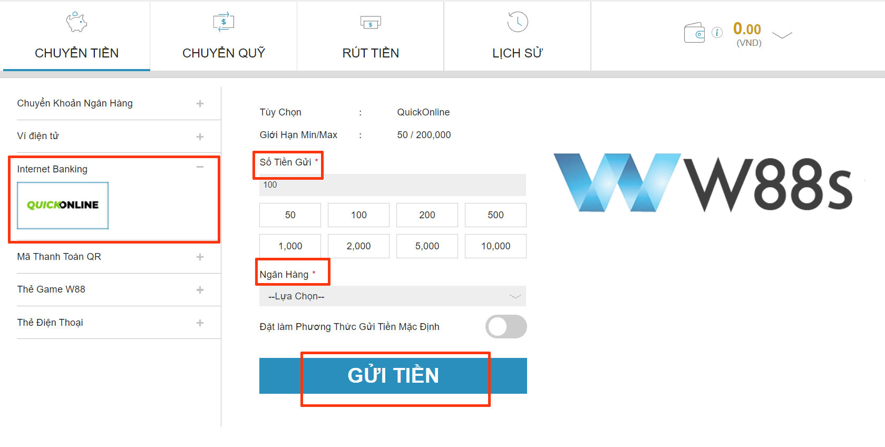
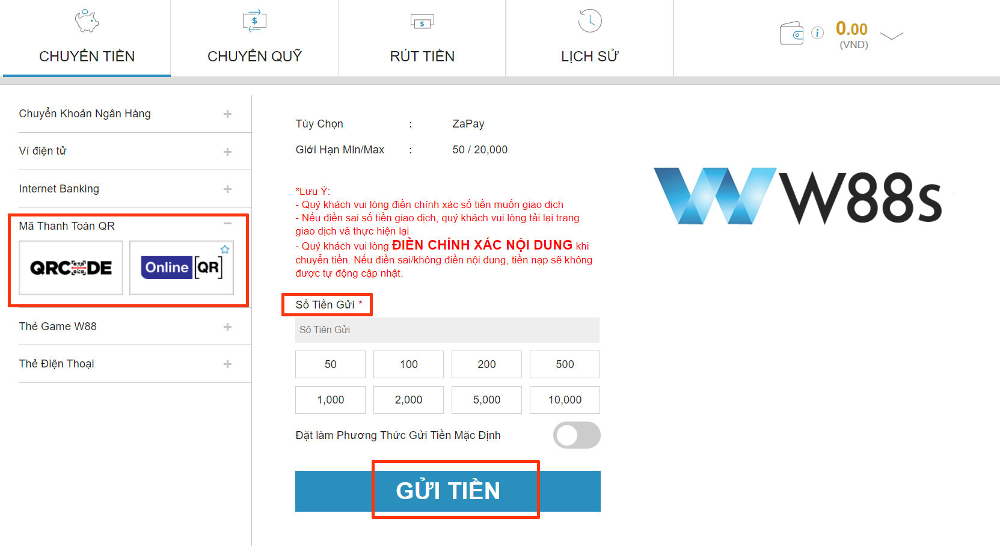
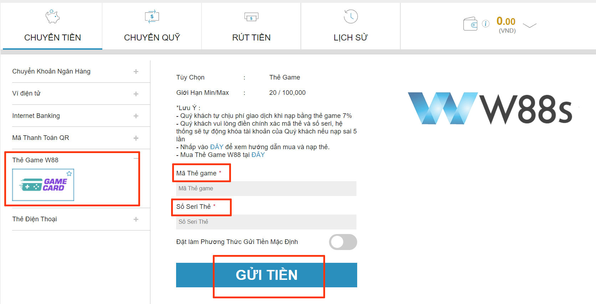
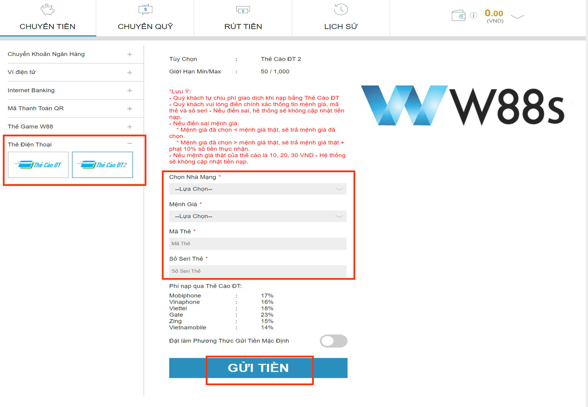

HƯỚNG DẪN NẠP TIỀN W88s – AN TOÀN, NHANH CHÓNG THÀNH CÔNG TRONG 5 PHÚT
W88s, một nhà cái đang dần chiếm lĩnh thị trường giải trí trực tuyến, thu hút một lượng lớn người chơi gia tăng mỗi ngày. Cách thức nạp tiền W88s, đã trở thành đề tài nóng hổi được mọi người quan tâm. Hãy cùng W88s khám phá những cách nạp tiền vào W88s nhanh gọn và bảo mật qua bài viết chi tiết sau đây!
Điều kiện & các lưu ý cần nắm khi nạp tiền W88s
Khi thực hiện nạp tiền hoặc rút tiền tại W88s, hãy tuân thủ những nguyên tắc sau để quá trình diễn ra mượt mà, nhanh chóng:
- Xác nhận danh tính: Tên trên tài khoản W88s phải chính xác như tên trên tài khoản ngân hàng mà bạn dùng để giao dịch.
- Sở hữu tài khoản: Dù bạn có thể sở hữu nhiều tài khoản ngân hàng, chúng phải do bạn quản lý. Tài khoản không thuộc sở hữu của bạn hoặc của bên thứ ba không được chấp nhận.
- Nhập số tiền: Khi nạp tiền, chỉ cần nhập số tiền mà không cần ba chữ số cuối. Ví dụ: nhập 100 VND thay vì 100,000 VNĐ.
- Mã OTP: Mã OTP chỉ có hiệu lực trong 2 phút và không được chia sẻ với ai.
- Phí giao dịch: Khi sử dụng thẻ cào hoặc thẻ game W88s, nhớ kiểm tra các mức phí giao dịch áp dụng.
- Lưu hóa đơn: Bảo quản tất cả biên lai và hóa đơn để bảo vệ quyền lợi của bạn trong trường hợp cần thiết.
- Hỗ trợ khách hàng: Nếu có bất kỳ thắc mắc hay vấn đề gì, đội ngũ chăm sóc khách hàng của W88s luôn sẵn lòng hỗ trợ bạn 24/7.
Những điều kiện và lưu ý khi chuyển tiền vào W88s
Hướng dẫn các cách gửi tiền W88s nhanh chóng & an toàn
W88s, một trong những nhà cái đứng đầu thị trường cá cược online, không chỉ nổi bật với sự phong phú của các trò chơi mà còn gây ấn tượng mạnh mẽ bởi hệ thống nạp/rút tiền W88s linh hoạt, dễ dàng. Hãy cùng tìm hiểu các cách chuyển tiền vào W88s sau nhé!
Cách nạp tiền W88s thông qua chuyển khoản ngân hàng
Nạp tiền W88s qua ngân hàng là lựa chọn phổ biến và an toàn nhất tại W88s. Sự liên kết với nhiều ngân hàng danh tiếng giúp người chơi có thể nạp tiền một cách dễ dàng và an toàn.
Bước 1: Truy cập và đăng nhập vào tài khoản W88s
Đầu tiên, đăng nhập vào tài khoản W88s của bạn. Tại giao diện chính, tìm và chọn mục “Chuyển Tiền” ở góc trái màn hình.
Nếu chưa có tài khoản, xem ngay hướng dẫn chi tiết đăng ký tại đây
 Chọn chuyển tiền góc trái màn hình
Chọn chuyển tiền góc trái màn hình
Bước 2: Tiến hành chuyển tiền
Chọn “Chuyển khoản ngân hàng” và nhập số tiền bạn muốn gửi. Sau đó, chọn ngân hàng tương ứng với tài khoản của bạn. Bạn có thể chuyển tiền qua các phương thức sau:
- Gửi tiền mặt
- Sử dụng Mobile Banking
- Internet Banking
- Chuyển tiền qua máy ATM
- Gửi tiền mặt qua máy ATM
Chuyển khoản ngân hàng
Bước 3: Hoàn tất thông tin theo hướng dẫn
Sau khi hoàn thành giao dịch, trở lại tài khoản W88s và chọn “Chuyển Tiền” > “Chuyển khoản ngân hàng” một lần nữa. Tại đây
- Điền thông tin theo biểu mẫu mà W88s cung cấp.
- Chuyển tiền theo số lượng và thông tin tài khoản mà W88s đã chỉ định.
- Lưu và tải lên W88s biên lai chuyển tiền mà bạn đã thực hiện.
- Nhập số tham chiếu được ghi trên hoá đơn chuyển tiền.
- Kiểm tra lại thông tin đã nhập, sau đó bấm “Gửi tiền” để hoàn tất.
Hoàn tất các thông tin và gửi
Bạn sẽ nhận được một mã số để theo dõi giao dịch. Lưu ý, thời gian để tiền cập nhật vào tài khoản của bạn có thể mất từ 5 phút đến 10 phút.
Cách chuyển tiền vào tài khoản W88s bằng ví điện tử
Nếu bạn đang tìm cách nạp tiền vào W88s một cách thuận lợi và nhanh chóng, sử dụng ví điện tử là phương án lý tưởng. Sau đây là các bước thực hiện:
Nạp tiền W88s bằng ví điện tử
Bước 1: Bắt đầu từ W88s
- Đăng nhập tài khoản W88s của bạn, tại trang chủ ngay góc trái, chọn mục “Chuyển tiền”.
- Chuyển đến phần “Ví điện tử” và lựa chọn loại ví bạn muốn sử dụng như Momo, Zalo Pay, hoặc Viettel Pay.
Bước 2: Thiết lập giao dịch
- Một cửa sổ mới hiển thị yêu cầu bạn nhập số tiền bạn muốn nạp.(Lưu ý: giới hạn tối thiểu và tối đa của mỗi ví điện tử sẽ khác nhau từ 30/ 30,000 VND).
- Nhập số tiền và nhấn “Gửi tiền”.
Bước 3: Kết nối và xác thực
- Mã QR sẽ gửi về và hiển thị trên màn hình.
- Mở ứng dụng ví điện tử trên điện thoại của bạn và chọn “Quét mã”.
- Thực hiện quét mã QR nhà cái cung cấp và xác nhận thông tin giao dịch.
- Nhập số tiền bạn muốn nạp và hoàn tất giao dịch bằng cách nhấn “Xác Nhận”.
Cách chuyển tiền vào W88s Internet Banking
Muốn tận hưởng thế giới giải trí của W88s một cách an toàn và nhanh chóng? Hãy thử nạp tiền W88s qua Internet Banking, một lựa chọn đơn giản và thuận tiện.
Cách nạp tiền W88s qua Internet Banking
Bước 1: Truy cập vào W88s
- Mở trang web chính thức của W88s và đăng nhập vào tài khoản của bạn.
- Sau khi đăng nhập, hãy tìm đến biểu tượng “Chuyển tiền” ở góc trên cùng bên trái của màn hình.
Bước 2: Chọn Internet Banking và điền thông tin
- Trong mục “Chuyển tiền”, chọn “Internet Banking” từ các lựa chọn có sẵn.
- Chọn ngân hàng mà bạn muốn sử dụng để thực hiện giao dịch (Ví dụ: MB Bank, VP Bank, Agribank, Sacombank, Vietinbank,…).
- Nhập số tiền bạn muốn nạp, trong khoảng từ 50/200,000 VND.
- Cung cấp thông tin chính xác về tên đăng nhập W88s của bạn và tên chủ tài khoản ngân hàng.
Bước 3: Hoàn tất giao dịch
- Khi đã nhập đủ thông tin, nhấn “Gửi tiền”. Bạn sẽ được chuyển hướng đến trang đăng nhập của ngân hàng để hoàn thành giao dịch.
- Ngay sau khi giao dịch hoàn tất, tài khoản W88s của bạn sẽ được cập nhật tức thì.
Nạp tiền W88s dễ dàng qua mã QR
Nạp tiền vào W88s bằng mã QR là cách thức nhanh chóng và bảo mật. Dưới đây là hướng dẫn từng bước để bạn có thể thực hiện giao dịch một cách thuận tiện:
Nạp tiền W88s bằng mã QR
Bước 1: Truy cập và đăng nhập W88s
- Mở trang chủ của W88s và đăng nhập sử dụng thông tin tài khoản đã đăng ký.
- Sau khi đăng nhập, chọn biểu tượng “Chuyển tiền” ở góc trên cùng màn hình.
Bước 2: Chọn phương thức nạp tiền mã QR
- Trong mục “Chuyển tiền”, chọn “Mã thanh toán QR” như Online QR, QRCodeVNDV2.
- Điền số tiền muốn nạp vào ô “Số tiền Gửi” (lưu ý giới hạn tối thiểu và tối đa cho mỗi giao dịch từ 30/ 100,000 VND).
- Sử dụng ứng dụng ví điện tử hoặc ngân hàng trên điện thoại để quét mã QR trên màn hình W88s.
Bước 4: Xác nhận giao dịch
- Ứng dụng sẽ tự động hiển thị chi tiết giao dịch, từ số tiền đến mã giao dịch.
- Kiểm tra lại thông tin, và nhấn “Gửi tiền” để hoàn tất.
- Giao dịch sẽ được xử lý, và số tiền sẽ cập nhật vào tài khoản W88s của bạn ngay lập tức.
Nạp tiền W88s bằng thẻ game W88s
Nạp tiền bằng thẻ Game W88s là cách thức nhanh chóng và thuận tiện, giúp bạn ngay lập tức tham gia các trò chơi và cá cược trực tuyến. Dưới đây là các bước để bạn thực hiện giao dịch dễ dàng:
Nhập chính xác mã thẻ game W88s và số seri thẻ
Bước 1: Tìm và mua thẻ Game W88s
- Thẻ Game W88s có thể được mua tại các đại lý uy tín hoặc qua các website chuyên bán thẻ trực tuyến.
Bước 2: Đăng nhập & chọn phương thức nạp tiền
- Sau khi đăng nhập vào W88s, nhấp vào “Chuyển tiền” ở góc phải màn hình.
- Chọn “Thẻ Game W88s” trong danh sách phương thức nạp tiền.
Bước 3: Nhập mã thẻ và số seri
- Cào phần bạc trên thẻ để lấy mã thẻ và nhập vào mục “mã thẻ game”.
- Tiếp theo, nhập “Số Seri Thẻ” theo hướng dẫn.
Bước 4: Xác nhận & hoàn tất giao dịch
- Kiểm tra thông tin một lần nữa và nhấn “Gửi tiền” để hoàn tất.
- Số tiền tương ứng với giá trị thẻ Game W88s sẽ được cập nhật vào tài khoản W88s của bạn ngay sau đó.
Lưu ý: Nạp tiền qua thẻ Game W88s đảm bảo bảo mật thông tin cá nhân. Phí giao dịch là 7%, và tài khoản sẽ bị khóa tạm thời nếu nhập sai thông tin thẻ 5 lần liên tiếp.
Nạp tiền W88s với thẻ cào điện thoại
Nếu bạn không sở hữu tài khoản ngân hàng nhưng vẫn muốn thưởng thức trải nghiệm tại W88s, hãy thử nạp tiền W88s bằng thẻ cào điện thoại – một phương pháp tiện ích và an toàn.
Cân nhắc trước khi nạp vì mức phí khá cao
Bước 1: Mua thẻ cào
- Mua thẻ cào từ các nhà mạng nổi tiếng như Viettel, Mobifone, hay Vinaphone,…
- Khi cạo lớp phủ bạc, mã thẻ sẽ xuất hiện.
Bước 2: Đăng nhập và chọn phương thức nạp tiền W88s
- Đăng nhập vào tài khoản W88s của riêng bạn.
- Chọn “Chuyển tiền”, sau đó chọn “Nạp qua thẻ điện thoại”.
Bước 3: Nhập thông tin thẻ cào
- Chọn nhà mạng tương ứng.
- Nhập mệnh giá của thẻ.
- Điền mã thẻ và số seri.
Bước 4: Hoàn tất việc nạp tiền
- Sau khi kiểm tra thông tin chính xác, nhấn “Gửi tiền” và đợi cập nhật.
- Số tiền sẽ được cập nhật trực tiếp vào tài khoản W88s của bạn.
Lưu ý: Nạp tiền qua thẻ cào sẽ chịu một khoản phí bắt buộc từ 14% đến 23%, tùy theo nhà mạng. Đây là điểm cần cân nhắc khi lựa chọn hình thức nạp tiền này.
Giải đáp những thắc mắc khi nạp tiền W88s
Khi bạn bước vào thế giới giải trí W88s, việc nạp tiền W88s an toàn, nhanh chóng là yếu tố quan trọng. Dưới đây là các câu hỏi thường gặp và lời giải đáp từ chuyên gia, giúp bạn hiểu rõ quy trình và xử lý mọi tình huống khi gửi tiền W88s.
FAQ – Các thắc mắc khi gửi tiền vào tài khoản W88s
Nạp tiền vào W88s có đảm bảo an toàn không?
W88s đặt an toàn của người chơi lên hàng đầu. Sử dụng công nghệ mã hóa tiên tiến, W88s đảm bảo bảo mật thông tin cá nhân và tài chính của bạn, đem lại sự an tâm tuyệt đối trong mọi giao dịch.
Làm gì nếu thiếu hóa đơn hoặc biên lai khi nạp tiền?
Trong trường hợp mất hóa đơn hoặc biên lai, không cần lo lắng. Kiểm tra email của bạn hoặc liên hệ trực tiếp với đội hỗ trợ W88s. Cung cấp thông tin cụ thể về giao dịch để được hỗ trợ nhanh chóng.
Nạp tiền vào W88s có mất phí không?
W88s không thu bất kỳ khoản phí nào cho đa số các phương thức nạp tiền. Tuy nhiên, khi sử dụng thẻ cào điện thoại, và thẻ game W88s bạn sẽ chịu một khoản phí chuyển đổi do nhà mạng đặt ra.
Giới hạn số tiền nạp vào W88s là bao nhiêu?
Mỗi phương thức nạp tiền W88s có giới hạn số tiền cụ thể. Hãy đọc kỹ thông tin và tuân thủ những hướng dẫn này để tránh những phiền phức không đáng có.
W88s có chương trình khuyến mãi cho lần nạp đầu tiên không?
W88s dành ưu đãi đặc biệt cho người chơi mới: 100% tiền thưởng cho lần nạp đầu tiên. Ngoài ra, nhiều chương trình khuyến mãi khác cũng đang chờ đợi bạn.
Xử lý thế nào khi tiền nạp chưa vào tài khoản?
Nếu tiền bạn nạp chưa vào tài khoản W88s, đừng hoảng sợ. Liên hệ với đội hỗ trợ W88s qua chat, email hoặc điện thoại và cung cấp thông tin chi tiết về giao dịch để nhận được sự trợ giúp kịp thời.
Mọi thắc mắc cần giải đáp, vui lòng liên hệ với chúng tôi theo các cách sau:
- Website: https://w88s.xyz/